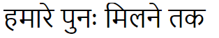

Sunday, September 22, 2019
This is Aniruddha Ram Kumar Mukherjee. He is a dog. Like many natives of Delhi, Aniruddha must find ways to cope with the oppressive afternoon summer heat. A quick nap on a bench can help pass by the hottest part of the day.
Fortunately, since it is late September, Winter is arriving and so temperatures are beginning to fall. Still, Aniruddha and his large extended family of conspicuously similar looking and ubiquitous canines seem hardly to ever move, preferring instead to lie out and sleep in the center of lawns, hills, sidewalks, roads, and crowded temple entrances.
I found myself thinking that perhaps it is the same dog, silently following us when we're not looking and then plopping down onto the ground apparently fast asleep as soon as we make a stop. Or maybe this dog possesses special powers that allow it to be in multiple places at once or maybe it's no dog at all, but a corporeal projection of some supernatural essence just beyond our comprehension, reaching out to us from the great unknown in the only way that it can: this looks like a nice place to nap... my back is itchy... do you have food?
Aniruddha Ram Kumar Mukherjee in particular (as many share parts of his name) spends his afternoons near the bathrooms outside of Humayun's tomb, an impressively symmetrical example of Mughal architecture (the tomb, not the bathrooms — though the bathrooms were nice, too). It looks the same from all four sides, such that when you walk out of it you don't know which side you're on. You must travel with somebody who knows which side you're on.

Inside of the tomb are nooks and crannies, domes and doves and a human thumb that kept photobombing me. There are no dead bodies, though. Those are allegedly kept underneath the tomb, off limits, to be sanctified by elected officials at regular intervals.


The grounds surrounding the tomb are a grid of sixteen patches of lawn landscaped with lime trees, jasmine, shrubs, one of Aniruddha's cousins, and my thumb.

The trip started out on one of Emirates' Airbus A380 super mega mondo grande venti mocha soymilk airplanes, or as it's referred to in the industry: "that big fucking plane." The plane is so big that if you're sitting over the wing, as I was, it's hard to see anything but the wing. Here is the glow of the sun as it rises over the Atlantic well into the flight, but before we got to Europe. It's strange how the day fast forwards as the plane races east at a significant percentage of the Earth's velocity at the surface.
Supposing that the Earth is a uniform sphere (it's not), rotating evenly about a single axis (it doesn't) at 1000 miles per hour (not quite) at the equator, then the surface of the Earth at forty-one degrees latitude, where New York City is, is tearing through space at 755 MPH. The Airbus A380 has a design cruising airspeed of mach 0.85, which is 652 MPH, so assuming that we were flying through a body of air stationary with respect to the ground (unlikely), along New York's line of latitude (we weren't), then we would have been experiencing the passage of the sun at 186% its normal rate, which I think is a pretty good deal. Also I had the whole row to myself, so I could lie down and torture everyone with my snoring.

That flight was twelve hours long. We were late getting out of JFK, and so we had to hustle our way across the Dubai airport to make our three hour connecting flight to Delhi.
Now in a state of near delirium (our mental state, not the state of India), we were picked up by a friendly and attentive hotel representative and driven to the hotel by a quiet and apparently reliable driver. Once at the hotel, the representative gave us a complimentary welcome cocktail and a play by play of everything that we'd be doing on the tour, and when. He also mentioned that Andrea and I would be sleeping in the same bed. I told him that "we don't typically sleep together," and so he spent the next few minutes going back and forth with the management seeing whether any two-twin rooms were available. There weren't. However, if we wanted they could wheel in an extra twin bed for us, which I volunteered to sleep on. So, Andrea gets the big bed.
I'd like to mention that this is the second time in less than a week that I have been sleeping on an auxiliary bed. Look, I get it, people. I get it.
That evening Vineet (the groom) reached out to us and invited us to come over to his place for dinner, to meet his father and hang out with his mother and Asha (the bride, not the cat). Here is a picture of Asha the cat:

Andrea and I nearly fell asleep at the dinner table, and so we politely ate and ran to an Uber who "had a GPS malfunction" and so took twice the time to get us back to the hotel, where we passed out immediately.
The following day (which is now ending, from my reference frame) we met a tour guide and the driver from the previous day, and they took us all around Delhi to see the sights. One of those sights was Humayun's tomb, where I met Aniruddha Ram Kumar Mukherjee.
It's very convenient to have a private tour guide and driver. They do all of the things and you just have to walk around, take pictures, and ask questions.
I took few pictures of the sights, because I was mostly seeing them, and because Andrea was carrying around a nice SLR, the contents of which I can later mooch off of.
I'm not going to narrate the whole tour (if you want that, I encourage you to visit Delhi for a day), but here are some of the pictures. Also I'm tired and want to go to sleep.
We started by visiting a large Sikh temple, which in actuality is just a giant family style restaurant, pool, and concert venue. No shoes required. That is, you are required not to wear shoes. The cooks don't wear shoes either.
Also, you must cover your hair, because that is how the Sikhs do. There's this guy:

and then there's Andrea:

Young Indian men kept coming up to Andrea and asking whether they could take a picture with her, but I have yet to figure out why.
After that we walked around a big old fort/palace, "the city within a city"

Here is a picture of where Gandhi was cremated:

Here is another tomb:

Here are two of my fingers, with a tower in the background:

Here is the tower closer:

Here are two of my fingers, a woman, and one of the archways of what remains of a mosque that was built out of the demolished remains of multiple Hindu temples. They removed all of the faces of the various depictions of Hindu gods, because Allah is the one true god, right? Right?

Oh yeah, earlier in the day we also walked around the parliamentary buildings and saw distant views of an arch and the Prime Minister's mansion. Here you are:


At some point we ate dinner, and the food was delicious. Now it is nearly one o'clock in the morning, and I am going to bed.
